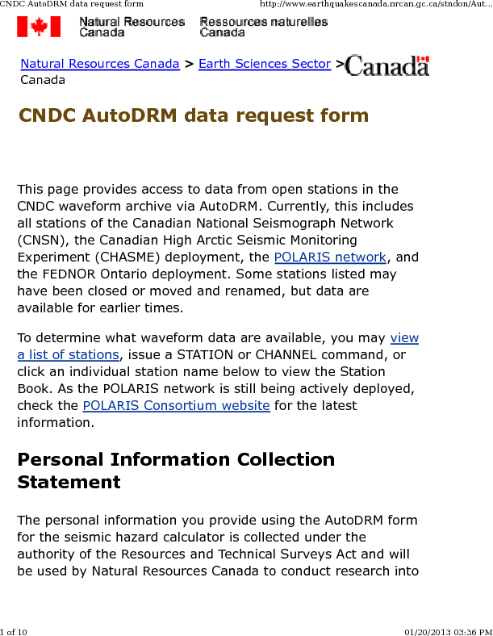
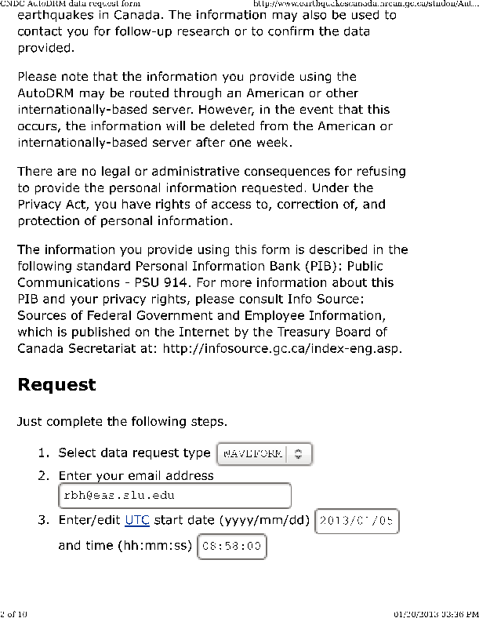
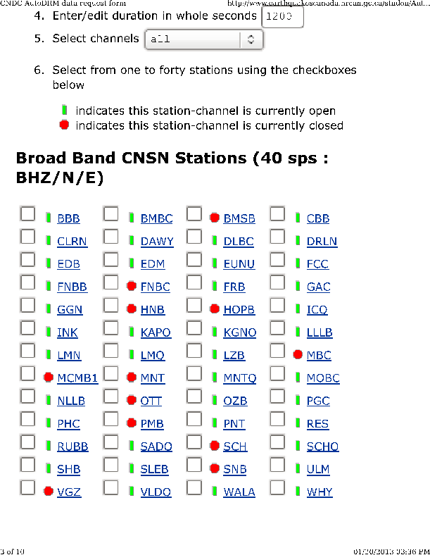
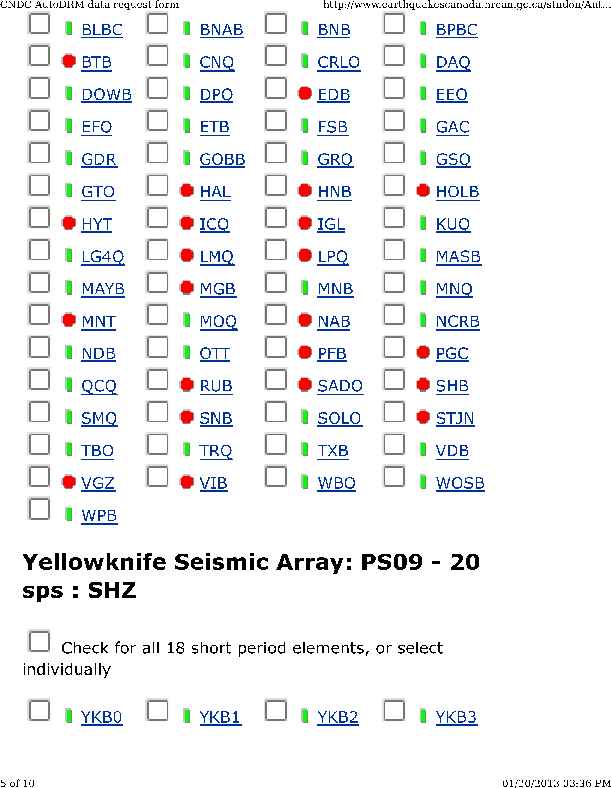
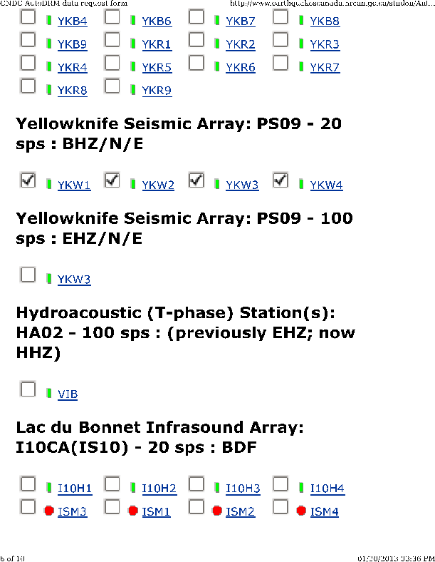
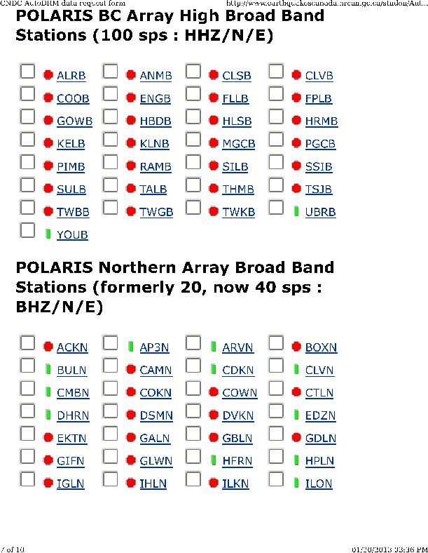
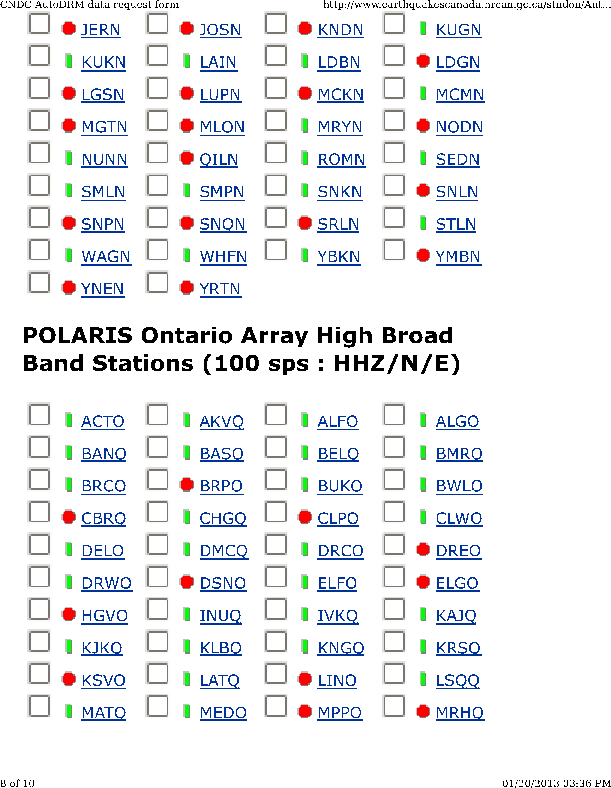
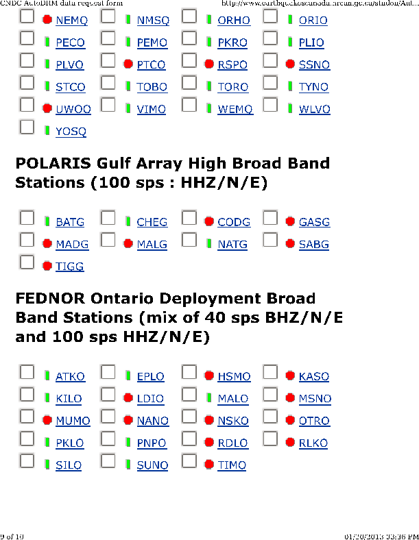
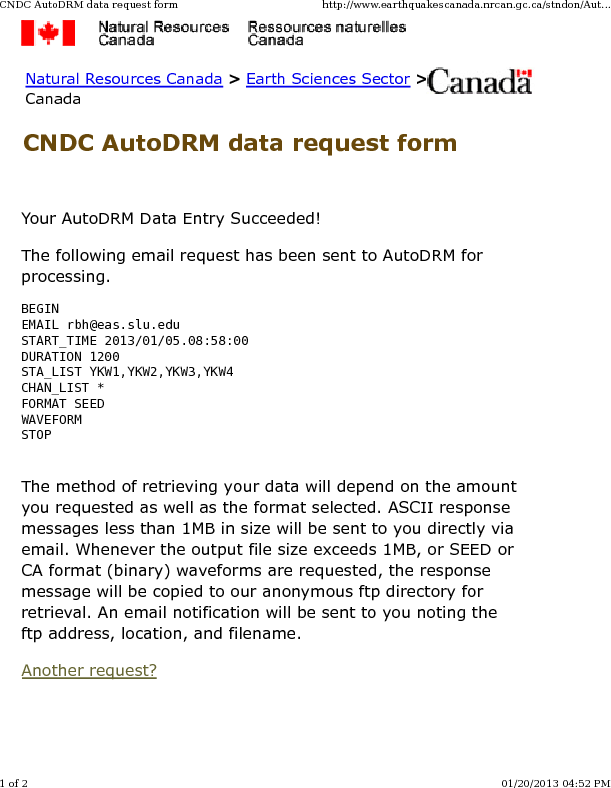
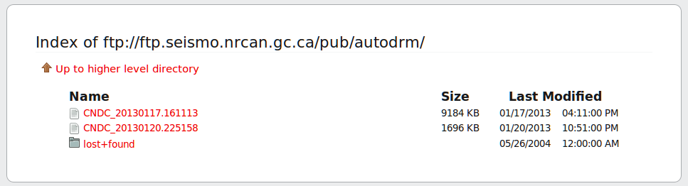

This tutorial shows how to acquire earthquake waveforms from data
centers.
The data centers are used to provide SEED volumes for regional
moment tensor inversion.
The source inversion is initiated by a "DO" script that looks
like the following example:
#!/bin/shThe DOIRIS script sets up the directory structure, instructs the user to place the SEED volumes in a subdirectory, and then
# valid regions
# REG Region FELTID VELOCITY_MODEL
# HI Hawaii hi [Not implemented June 23, 2007]
# SAK Alaska ak WUS (to 69 km deep)
# NAK Alaska ak CUS (in continent from Rockies -no deep)
# CA California ca WUS
# PNW Pacific Northwestrn pnw WUS
# IMW Intermountain west imw WUS
# CUS Central US cus CUS
# NE Northeastern US ne CUS
# ECAN Eastern Canada ous CUS (in continent from Rockies)
# WCAN Western Canada ous [Not implemented June 23, 2007]
#####
# Command syntax:
#DOCWBREG YEAR MO DY HR MN SC MSC LAT LON DEP MAG REG NEIC FELTID STATE/COUNTRY
#####
DOIRIS "2013" "01" "05" "08" "58" "19" "000" " 55.368" " -134.621" "9.8" " 7.48" "CUS" "c000ejqv" "US/c000ejqv" "Canada"
1. PLACE THE SEED_VOLUME FROM IRIS in /backup/rbh/PROGRAMS.310t/MECH.NA/20130105085819/20130105085819
cp SEED_VOLUME /backup/rbh/PROGRAMS.310t/MECH.NA/20130105085819/20130105085819
2. UNPACK the SEED_VOLUME FROM IRIS as follows
cd /backup/rbh/PROGRAMS.310t/MECH.NA/20130105085819/20130105085819
cd Sac
rdseed -f ../SEED_VOLUME -R -d -o 1
[Note use the name of the downloaded file for SEED_VOLUME, e.g., 20090116.seed]
3. Return to the top level directory where you started:
cd /backup/rbh/PROGRAMS.310t/MECH.NA
4. enter the command:
DOFINISH
Natural Resources Canada/Ressources naturelles Canada provides
access to waveform data through their autodrm site. The web page
is very easy to use. There are some limitations on the size of the
download request, and of course some shortcuts for easier access.
The autodrm request form starts with an the users Email address.
When the request is complete, an Email to the user is sent giving
the location for FTP access.
Because of the limitation on file downloads, I first run the
script DOGSC to get a list of stations ordered by epicentral
distance. I use this is select stations for regional moment tensor
inversion. The script is available from the next link - just
download and save,
and then
chmod +x DOGSC
Now run the script with the syntax
DOGSC lat lon, e.g.,
DOGSC 55.368 -134.621
The result is the file gsc.list The first
few lines of this file are
NDB 191.1411 145 19970101.0001 29991231.0000The entries are station name, epicentral distances, azimuth, on_date and off_date. Note that the station information was downloaded in September, 2012 and should be periodically upgraded manually.
MASB 225.3494 131 19990505.1919 29991231.0000
VIB 271.7930 149 20041123.1343 29991231.0000
DIB 278.7018 149 20040315.1942 29991231.0000
MOBC 301.9514 144 19960226.1956 29991231.0000
RUBB 303.6043 111 20120518.2140 29991231.0000
BNAB 332.2422 127 19990416.1834 29991231.0000
BNB 363.4351 148 19960226.1955 29991231.0000
DLBC 441.3487 37 19940928.2211 29991231.0000
CNDC AutoDRM data request page
The following pages show how the form is completed to get the
SEED volume for the broadbands at Yellowknife.
|  |
|  |
|  |
|  |
|  |
|  |
|  |
|  |
| |
When the list is complete, click on the "Submit" button. The next page will be
|  |
rbh@bob:~$ date -u
Sun Jan 20 22:52:27 UTC 2013
|  |
wget ftp://ftp.seismo.nrcan.gc.ca/pub/autodrm/CNDC_20130120.225158
cd Sac
rdseed -f ../CNDC* -R -D -o 1
{kind=link}
{kind=link}
{kind=link}
{kind=link}
{kind=link}
{kind=link}
{kind=link}
{kind=link}
{kind=link}